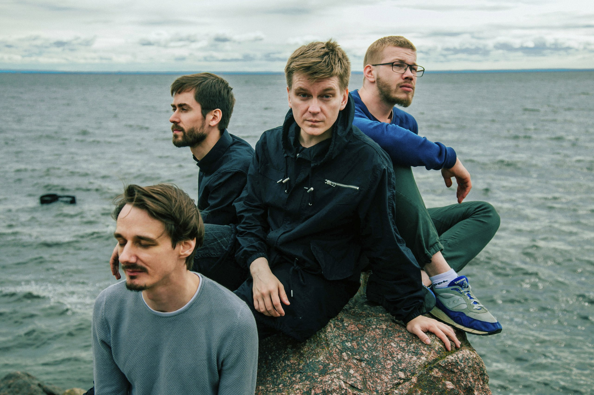

О группе
Аффинаж — российский музыкальный коллектив, работающий в синтетическом стиле нуар-шансон, который содержит отсылки к множеству жанров поп- и рок-музыки. Основан в Санкт-Петербурге автором текстов, вокалистом и гитаристом Михаилом Калининым (псевдоним — Эм Калинин) и басистом Сергеем Шиляевым (псевдоним — Сергеич) в марте—апреле 2012 года. Позже к группе присоединились баянист Александр Корюковец и тромбонист Александр Евдокимов (псевдоним — Саша Ом).
